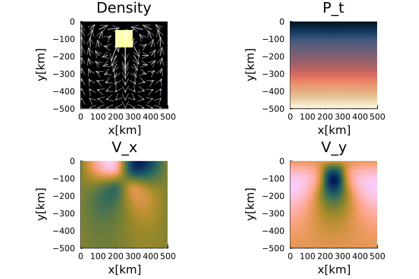

Falling Block; Defect Correction
This documentation presents two examples illustrating the use of the defect correction method to solve the momentum equation, assuming either constant or variable viscosity, in combination with tracer-based advection. For more details on the falling block benchmark setup, please refer to the documentation.
For more details on the defect correction method, please refer to the momentum equation documentation.
For more details on the tracer advection method, please refer to the advection scheme documentation.
For more details on initializing the model using tracers, please refer to the initialization documentation.
Falling Block - constant $\eta$
This is an example to solve the instantenous falling block problem assuming a constant viscosity and using the defect correction method.
First, one needs to load the corresponding modules.
using Plots
using ExtendableSparse
using GeoModBox.InitialCondition, GeoModBox.MomentumEquation.TwoDNow one can define the parameters to setup the model and some plotting parameters.
# Define Initial Condition ========================================== #
# Density ---
# 1) block
Ini = (p=:block,)
# ------------------------------------------------------------------- #
# Plot Settings ===================================================== #
Pl = (
qinc = 5,
qsc = 100*(60*60*24*365.25)*5e1
)
# ------------------------------------------------------------------- #In the following, one needs to define the model geometry and the numerical grid parameters.
# Geometry ========================================================== #
M = (
xmin = 0.0,
xmax = 500.0e3, # [ m ]
ymin = -500.0e3, # [ m ]
ymax = 0.0,
)
# -------------------------------------------------------------------- #
# Grid =============================================================== #
NC = (
x = 50,
y = 50,
)
NV = (
x = NC.x + 1,
y = NC.y + 1,
)
Δ = (
x = (M.xmax - M.xmin)/NC.x,
y = (M.ymax - M.ymin)/NC.y,
)
x = (
c = LinRange(M.xmin+Δ.x/2,M.xmax-Δ.x/2,NC.x),
ce = LinRange(M.xmin - Δ.x/2.0, M.xmax + Δ.x/2.0, NC.x+2),
v = LinRange(M.xmin,M.xmax,NV.x),
)
y = (
c = LinRange(M.ymin+Δ.y/2,M.ymax-Δ.y/2,NC.y),
ce = LinRange(M.ymin - Δ.x/2.0, M.ymax + Δ.x/2.0, NC.y+2),
v = LinRange(M.ymin,M.ymax,NV.y),
)
x1 = (
c2d = x.c .+ 0*y.c',
v2d = x.v .+ 0*y.v',
vx2d = x.v .+ 0*y.ce',
vy2d = x.ce .+ 0*y.v',
)
x = merge(x,x1)
y1 = (
c2d = 0*x.c .+ y.c',
v2d = 0*x.v .+ y.v',
vx2d = 0*x.v .+ y.ce',
vy2d = 0*x.ce .+ y.v',
)
y = merge(y,y1)
# -------------------------------------------------------------------- #Next, define the physical parameters of the problem and initialize the required data arrays.
# Physics ============================================================ #
g = 9.81 # Gravitational acceleration
η₀ = 1.0e21 # Reference Viscosity
ρ₀ = 3200.0 # Background density
ρ₁ = 3300.0 # Block density
ρ = [ρ₀,ρ₁]
phase = [0,1]
# ------------------------------------------------------------------- #
# Allocation ======================================================== #
D = (
vx = zeros(Float64,NV.x,NC.y+2),
vy = zeros(Float64,NC.x+2,NV.y),
Pt = zeros(Float64,NC...),
p = zeros(Int64,NC...),
p_ex = zeros(Int64,NC.x+2,NC.y+2),
ρ = zeros(Float64,NC...),
vxc = zeros(Float64,NC...),
vyc = zeros(Float64,NC...),
vc = zeros(Float64,NC...),
)
# Needed for the defect correction solution ---
divV = zeros(Float64,NC...)
ε = (
xx = zeros(Float64,NC...),
yy = zeros(Float64,NC...),
xy = zeros(Float64,NV...),
)
τ = (
xx = zeros(Float64,NC...),
yy = zeros(Float64,NC...),
xy = zeros(Float64,NV...),
)
# Residuals ---
Fm = (
x = zeros(Float64,NV.x, NC.y),
y = zeros(Float64,NC.x, NV.y)
)
FPt = zeros(Float64,NC...)
# ------------------------------------------------------------------- #The velocity boundary conditions and the initial condition are set in the following. As this example computes only the instanteneous solution, tracers are not required, and the field is initialized using a predefined phase distribution function.
# Boundary Conditions =============================================== #
VBC = (
type = (E=:freeslip,W=:freeslip,S=:freeslip,N=:freeslip),
val = (E=zeros(NV.y),W=zeros(NV.y),S=zeros(NV.x),N=zeros(NV.x)),
)
# ------------------------------------------------------------------- #
# Initial Condition ================================================= #
IniPhase!(Ini.p,D,M,x,y,NC;phase)
for i in eachindex(phase)
D.ρ[D.p.==phase[i]] .= ρ[i]
end
# ------------------------------------------------------------------- #To solve the system of equations using the defect correction method, one needs to define the numbering of the nodes, the residual and correction vector.
# System of Equations =============================================== #
# Numbering, without ghost nodes! ---
off = [ NV.x*NC.y, # vx
NV.x*NC.y + NC.x*NV.y, # vy
NV.x*NC.y + NC.x*NV.y + NC.x*NC.y] # Pt
Num = (
Vx = reshape(1:NV.x*NC.y, NV.x, NC.y),
Vy = reshape(off[1]+1:off[1]+NC.x*NV.y, NC.x, NV.y),
Pt = reshape(off[2]+1:off[2]+NC.x*NC.y,NC...),
)
F = zeros(maximum(Num.Pt))
δx = zeros(maximum(Num.Pt))
# ------------------------------------------------------------------- #Now, one can solve the system of equations for the initial residuals.
# Initial Residual -------------------------------------------------- #
Residuals2Dc!(D,VBC,ε,τ,divV,Δ,η₀,g,Fm,FPt)
F[Num.Vx] = Fm.x[:]
F[Num.Vy] = Fm.y[:]
F[Num.Pt] = FPt[:]
# ------------------------------------------------------------------- #In the following, the coefficients for the coefficient matrix are collected and the correction term is calculated. The correction term is used to update the initial velocity and pressure guess. The final residual quantifies the accuracy of the numerical solution.
# Assemble Coefficients ============================================= #
K = Assemblyc(NC, NV, Δ, η₀, VBC, Num)
# ------------------------------------------------------------------- #
# Solution of the linear system ===================================== #
δx = - K \ F
# ------------------------------------------------------------------- #
# Update Unknown Variables ========================================== #
D.vx[:,2:end-1] .+= δx[Num.Vx]
D.vy[2:end-1,:] .+= δx[Num.Vy]
D.Pt .+= δx[Num.Pt]
# Final Residual ==================================================== #
Residuals2Dc!(D,VBC,ε,τ,divV,Δ,η₀,g,Fm,FPt)
# ------------------------------------------------------------------- #For visualization purposes, the centroid velocity is calculated. Subsequently, the density, velocity components, and pressure fields of the instantaneous solution are plotted. The final figure is stored in the results directory.
# ------------------------------------------------------------------- #
# Get the velocity on the centroids ---
for i = 1:NC.x
for j = 1:NC.y
D.vxc[i,j] = (D.vx[i,j+1] + D.vx[i+1,j+1])/2
D.vyc[i,j] = (D.vy[i+1,j] + D.vy[i+1,j+1])/2
end
end
@. D.vc = sqrt(D.vxc^2 + D.vyc^2)
# ---
@show(minimum(D.vc))
@show(maximum(D.vc))
# ---
p = heatmap(x.c./1e3,y.c./1e3,D.ρ',color=:inferno,
xlabel="x[km]",ylabel="y[km]",colorbar=false,
title="Density",
aspect_ratio=:equal,xlims=(M.xmin/1e3, M.xmax/1e3),
ylims=(M.ymin/1e3, M.ymax/1e3),
layout=(2,2),subplot=1)
quiver!(p,x.c2d[1:Pl.qinc:end,1:Pl.qinc:end]./1e3,
y.c2d[1:Pl.qinc:end,1:Pl.qinc:end]./1e3,
quiver=(D.vx[1:Pl.qinc:end,1:Pl.qinc:end].*Pl.qsc,
D.vyc[1:Pl.qinc:end,1:Pl.qinc:end].*Pl.qsc),
la=0.5,
color="white",layout=(2,2),subplot=1)
heatmap!(p,x.c./1e3,y.c./1e3,D.vxc',
xlabel="x[km]",ylabel="y[km]",colorbar=false,
title="V_x",color=cgrad(:batlow),
aspect_ratio=:equal,xlims=(M.xmin/1e3, M.xmax/1e3),
ylims=(M.ymin/1e3, M.ymax/1e3),
layout=(2,2),subplot=3)
heatmap!(p,x.c./1e3,y.c./1e3,D.vyc',
xlabel="x[km]",ylabel="y[km]",colorbar=false,
title="V_y",color=cgrad(:batlow),
aspect_ratio=:equal,xlims=(M.xmin/1e3, M.xmax/1e3),
ylims=(M.ymin/1e3, M.ymax/1e3),
layout=(2,2),subplot=4)
heatmap!(p,x.c./1e3,y.c./1e3,D.Pt',
xlabel="x[km]",ylabel="y[km]",colorbar=false,
title="P_t",color=cgrad(:lipari),
aspect_ratio=:equal,xlims=(M.xmin/1e3, M.xmax/1e3),
ylims=(M.ymin/1e3, M.ymax/1e3),
layout=(2,2),subplot=2)
display(p)
savefig(p,string("./examples/StokesEquation/2D/Results/FallingBlockConstEta_Instanteneous_DC.png"))
Figure 1. Instanteneous solution of an isoviscous falling block problem.
Falling Block-variable $\eta$
This is an example to solve the falling block problem assuming a variable viscosity and using the defect correction method. The advection is done using tracers
Let's load the necessary modules first.
using Plots
using ExtendableSparse
using GeoModBox.InitialCondition, GeoModBox.MomentumEquation.TwoD
using GeoModBox.AdvectionEquation.TwoD
using GeoModBox.Tracers.TwoD
using Base.Threads
using PrintfAs in the previous example, one needs to define the initial configuration, some plotting parameters, the model geometry, and the numerical grid at first.
# Define Initial Condition ========================================== #
# 1) block
Ini = (p=:block,)
# ------------------------------------------------------------------- #
# Plot Settings ===================================================== #
Pl = (
qinc = 4,
mainc = 2,
qsc = 100*(60*60*24*365.25)*5e1
)
# ------------------------------------------------------------------- #
# Geometry ========================================================== #
M = (
xmin = 0.0,
xmax = 500.0e3, # [ m ]
ymin = -500.0e3, # [ m ]
ymax = 0.0,
)
# -------------------------------------------------------------------- #
# Grid =============================================================== #
NC = (
x = 50,
y = 50,
)
NV = (
x = NC.x + 1,
y = NC.y + 1,
)
Δ = (
x = (M.xmax - M.xmin)/NC.x,
y = (M.ymax - M.ymin)/NC.y,
)
x = (
c = LinRange(M.xmin+Δ.x/2,M.xmax-Δ.x/2,NC.x),
ce = LinRange(M.xmin - Δ.x/2.0, M.xmax + Δ.x/2.0, NC.x+2),
v = LinRange(M.xmin,M.xmax,NV.x),
)
y = (
c = LinRange(M.ymin+Δ.y/2,M.ymax-Δ.y/2,NC.y),
ce = LinRange(M.ymin - Δ.x/2.0, M.ymax + Δ.x/2.0, NC.y+2),
v = LinRange(M.ymin,M.ymax,NV.y),
)
x1 = (
c2d = x.c .+ 0*y.c',
v2d = x.v .+ 0*y.v',
vx2d = x.v .+ 0*y.ce',
vy2d = x.ce .+ 0*y.v',
)
x = merge(x,x1)
y1 = (
c2d = 0*x.c .+ y.c',
v2d = 0*x.v .+ y.v',
vx2d = 0*x.v .+ y.ce',
vy2d = 0*x.ce .+ y.v',
)
y = merge(y,y1)
# -------------------------------------------------------------------- #Given that variable viscosity is assumed, the properties of both the block and surrounding matrix must be defined, along with other relevant physical parameters. The viscosity, density, and phase arrays are used to initialize the model using tracers. For more information, please refer to the documentation.
# Physics ============================================================ #
g = 9.81 # Gravitational acceleration
η₀ = 1.0e21 # Reference Viscosity
η₁ = 1.0e27 # Block Viscosity
ηᵣ = log10(η₁/η₀)
η = [η₀,η₁] # Viscosity for phases
ρ₀ = 3200.0 # Background density
ρ₁ = 3300.0 # Block density
ρ = [ρ₀,ρ₁]
phase = [0,1]
# ------------------------------------------------------------------- #Next, define the output filename for the animation and initialize the data arrays.
# Animation and Plot Settings ======================================= #
path = string("./examples/StokesEquation/2D/Results/")
save_fig = 1
anim = Plots.Animation(path, String[] )
filename = string("Falling_",Ini.p,"_ηr_",round(ηᵣ),
"_tracers_DC")
# ------------------------------------------------------------------- #
# Allocation ======================================================== #
D = (
vx = zeros(Float64,NV.x,NC.y+2),
vy = zeros(Float64,NC.x+2,NV.y),
Pt = zeros(Float64,NC...),
p = zeros(Float64,NC...),
ρ = zeros(Float64,NC...),
vxc = zeros(Float64,NC...),
vyc = zeros(Float64,NC...),
vc = zeros(Float64,NC...),
wt = zeros(Float64,(NC.x,NC.y)),
wtv = zeros(Float64,(NV.x,NV.y)),
ηc = zeros(Float64,NC...),
ηv = zeros(Float64,NV...),
)
# Needed for the defect correction solution ---
divV = zeros(Float64,NC...)
ε = (
xx = zeros(Float64,NC...),
yy = zeros(Float64,NC...),
xy = zeros(Float64,NV...),
)
τ = (
xx = zeros(Float64,NC...),
yy = zeros(Float64,NC...),
xy = zeros(Float64,NV...),
)
# ------------------------------------------------------------------- #The velocity boundary conditions and time integration parameters are set in the following block.
# Boundary Conditions =============================================== #
VBC = (
type = (E=:freeslip,W=:freeslip,S=:freeslip,N=:freeslip),
val = (E=zeros(NV.y),W=zeros(NV.y),S=zeros(NV.x),N=zeros(NV.x)),
)
# ------------------------------------------------------------------- #
# Time ============================================================== #
T = (
tmax = [0.0],
Δfac = 1.0, # Courant time factor, i.e. dtfac*dt_courant
Δ = [0.0],
time = [0.0,0.0],
)
T.tmax[1] = 20.589 * 1e6 * (60*60*24*365.25) # [ s ]
nt = 9999
# ------------------------------------------------------------------- #To advect the properties using tracers, one needs to initialize the tracers in the following. This defines the initial position of the tracers within the model domain and assigns the phases to the corresponding tracers (IniTracer2D()).
Note: Currently, the initial phase attribution to the tracers is only possible for a rectangular block (see source code for more details). However, additional configurations can be implemented and activated via the
Ini.pvariable.
Following the initialization of the tracers, the necessary information (density and viscosity) to solve the governing equations is interpolate from the tracers onto the required nodes (centroids or vertices).
# Tracer Advection ================================================== #
nmx,nmy = 3,3
noise = 0
nmark = nmx*nmy*NC.x*NC.y
Aparam = :phase
MPC = (
c = zeros(Float64,(NC.x,NC.y)),
v = zeros(Float64,(NV.x,NV.y)),
th = zeros(Float64,(nthreads(),NC.x,NC.y)),
thv = zeros(Float64,(nthreads(),NV.x,NV.y)),
)
MPC1 = (
PG_th = [similar(D.ρ) for _ = 1:nthreads()], # per thread
PV_th = [similar(D.ηv) for _ = 1:nthreads()], # per thread
wt_th = [similar(D.wt) for _ = 1:nthreads()], # per thread
wtv_th = [similar(D.wtv) for _ = 1:nthreads()], # per thread
)
MPC = merge(MPC,MPC1)
Ma = IniTracer2D(Aparam,nmx,nmy,Δ,M,NC,noise,Ini.p,phase)
# RK4 weights ---
rkw = 1.0/6.0*[1.0 2.0 2.0 1.0] # for averaging
rkv = 1.0/2.0*[1.0 1.0 2.0 2.0] # for time stepping
# Count marker per cell ---
CountMPC(Ma,nmark,MPC,M,x,y,Δ,NC,NV,1)
# Interpolate from markers to cell ---
Markers2Cells(Ma,nmark,MPC.PG_th,D.ρ,MPC.wt_th,D.wt,x,y,Δ,Aparam,ρ)
Markers2Cells(Ma,nmark,MPC.PG_th,D.p,MPC.wt_th,D.wt,x,y,Δ,Aparam,phase)
Markers2Vertices(Ma,nmark,MPC.PV_th,D.ηv,MPC.wtv_th,D.wtv,x,y,Δ,Aparam,η)
@. D.ηc = 0.25 * (D.ηv[1:end-1,1:end-1] +
D.ηv[2:end-0,1:end-1] +
D.ηv[1:end-1,2:end-0] +
D.ηv[2:end-0,2:end-0])
# System of Equations =============================================== #To solve the linear system of equations, one needs to initialize the correspondig arrays as well.
# Numbering, without ghost nodes! ---
off = [ NV.x*NC.y, # vx
NV.x*NC.y + NC.x*NV.y, # vy
NV.x*NC.y + NC.x*NV.y + NC.x*NC.y] # Pt
Num = (
Vx = reshape(1:NV.x*NC.y, NV.x, NC.y),
Vy = reshape(off[1]+1:off[1]+NC.x*NV.y, NC.x, NV.y),
Pt = reshape(off[2]+1:off[2]+NC.x*NC.y,NC...),
)
δx = zeros(maximum(Num.Pt)) # Correction term
F = zeros(maximum(Num.Pt)) # Full residual (v and P)
# Residuals ---
Fm = (
x = zeros(Float64,NV.x, NC.y),
y = zeros(Float64,NC.x, NV.y)
)
FPt = zeros(Float64,NC...)
# ------------------------------------------------------------------- #Now, one can start the time loop.
# Time Loop ========================================================= #
for it = 1:nt
# Update Time ---
T.time[1] = T.time[2]
@printf("Time step: #%04d, Time [Myr]: %04e\n ",it,
T.time[1]/(60*60*24*365.25)/1.0e6)First the momentum equation is solved.
# Momentum Equation ===
# Initial Residual ---------------------------------------------- #
D.vx .= 0.0
D.vy .= 0.0
D.Pt .= 0.0
Residuals2D!(D,VBC,ε,τ,divV,Δ,D.ηc,D.ηv,g,Fm,FPt)
F[Num.Vx] = Fm.x[:]
F[Num.Vy] = Fm.y[:]
F[Num.Pt] = FPt[:]
# Assemble Coefficients ========================================= #
K = Assembly(NC, NV, Δ, D.ηc, D.ηv, VBC, Num)
# --------------------------------------------------------------- #
# Solution of the linear system ================================= #
δx = - K \ F
# --------------------------------------------------------------- #
# Update Unknown Variables ====================================== #
D.vx[:,2:end-1] .+= δx[Num.Vx]
D.vy[2:end-1,:] .+= δx[Num.Vy]
D.Pt .+= δx[Num.Pt]
# Final Residual ================================================ #
Residuals2D!(D,VBC,ε,τ,divV,Δ,D.ηc,D.ηv,g,Fm,FPt)
# --------------------------------------------------------------- #For visualization purposes, the centroid velocities are calculated.
# --------------------------------------------------------------- #
# Get the velocity on the centroids ---
for i = 1:NC.x
for j = 1:NC.y
D.vxc[i,j] = (D.vx[i,j+1] + D.vx[i+1,j+1])/2
D.vyc[i,j] = (D.vy[i+1,j] + D.vy[i+1,j+1])/2
end
end
@. D.vc = sqrt(D.vxc^2 + D.vyc^2)
# ---
@show(minimum(D.vc))
@show(maximum(D.vc))
# ---
if T.time[2] >= T.tmax[1]
it = nt
end
# ---At selected time steps, the density, tracer distribution, viscosity, and absolute velocity are visualized in a single figure. These plots are used for the animation.
if mod(it,2) == 0 || it == nt || it == 1
p = heatmap(x.c./1e3,y.c./1e3,D.ρ',color=:inferno,
xlabel="x[km]",ylabel="y[km]",colorbar=false,
title="ρ",
aspect_ratio=:equal,xlims=(M.xmin/1e3, M.xmax/1e3), ylims=(M.ymin/1e3, M.ymax/1e3),
layout=(2,2),subplot=1)
scatter!(p,Ma.x[1:Pl.mainc:end]./1e3,Ma.y[1:Pl.mainc:end]./1e3,
ms=1,ma=0.5,mc=Ma.phase[1:Pl.mainc:end],markerstrokewidth=0.0,
xlabel="x[km]",ylabel="y[km]",colorbar=false,
title="tracers",label="",
aspect_ratio=:equal,xlims=(M.xmin/1e3, M.xmax/1e3),
ylims=(M.ymin/1e3, M.ymax/1e3),
layout=(2,2),subplot=2)
heatmap!(p,x.c./1e3,y.c./1e3,D.vc',
xlabel="x[km]",ylabel="y[km]",colorbar=false,
title="V_c",color=cgrad(:batlow),
aspect_ratio=:equal,xlims=(M.xmin/1e3, M.xmax/1e3),
ylims=(M.ymin/1e3, M.ymax/1e3),
layout=(2,2),subplot=4)
quiver!(p,x.c2d[1:Pl.qinc:end,1:Pl.qinc:end]./1e3,
y.c2d[1:Pl.qinc:end,1:Pl.qinc:end]./1e3,
quiver=(D.vxc[1:Pl.qinc:end,1:Pl.qinc:end].*Pl.qsc,
D.vyc[1:Pl.qinc:end,1:Pl.qinc:end].*Pl.qsc),
la=0.5,color="white",layout=(2,2),subplot=4)
heatmap!(p,x.c./1e3,y.c./1e3,log10.(D.ηc'),color=reverse(cgrad(:roma)),
xlabel="x[km]",ylabel="y[km]",title="η_c",
clims=(15,27),
aspect_ratio=:equal,xlims=(M.xmin/1e3, M.xmax/1e3),
ylims=(M.ymin/1e3, M.ymax/1e3),colorbar=true,
layout=(2,2),subplot=3)
if save_fig == 1
Plots.frame(anim)
elseif save_fig == 0
display(p)
end
end
if T.time[2] >= T.tmax[1]
break
endNow, one needs to calculate the time stepping for the advection.
# Calculate Time Stepping ---
T.Δ[1] = T.Δfac * minimum((Δ.x,Δ.y)) /
(sqrt(maximum(abs.(D.vx))^2 + maximum(abs.(D.vy))^2))
@printf("\n")
# Calculate Time ---
T.time[2] = T.time[1] + T.Δ[1]
if T.time[2] > T.tmax[1]
T.Δ[1] = T.tmax[1] - T.time[1]
T.time[2] = T.time[1] + T.Δ[1]
endFinally the tracers are advected and the information on the numerical grid is updated.
# Advection ===
# Advect tracers ---
@printf("Running on %d thread(s)\n", nthreads())
AdvectTracer2D(Ma,nmark,D,x,y,T.Δ[1],Δ,NC,rkw,rkv,1)
CountMPC(Ma,nmark,MPC,M,x,y,Δ,NC,NV,it)
# Interpolate phase from tracers to grid ---
Markers2Cells(Ma,nmark,MPC.PG_th,D.ρ,MPC.wt_th,D.wt,x,y,Δ,Aparam,ρ)
Markers2Cells(Ma,nmark,MPC.PG_th,D.p,MPC.wt_th,D.wt,x,y,Δ,Aparam,phase)
Markers2Vertices(Ma,nmark,MPC.PV_th,D.ηv,MPC.wtv_th,D.wtv,x,y,Δ,Aparam,η)
@. D.ηc = 0.25 * (D.ηv[1:end-1,1:end-1] +
D.ηv[2:end-0,1:end-1] +
D.ηv[1:end-1,2:end-0] +
D.ηv[2:end-0,2:end-0])
end # End Time LoopThe animation is saved in the corresponding gif file.
# Save Animation ---
if save_fig == 1
# Write the frames to a GIF file
Plots.gif(anim, string( path, filename, ".gif" ), fps = 15)
foreach(rm, filter(startswith(string(path,"00")), readdir(path,join=true)))
end
Figure 2. Time-dependent solution of the falling block problem assuming a viscosity contrast of 6 orders of magnitude